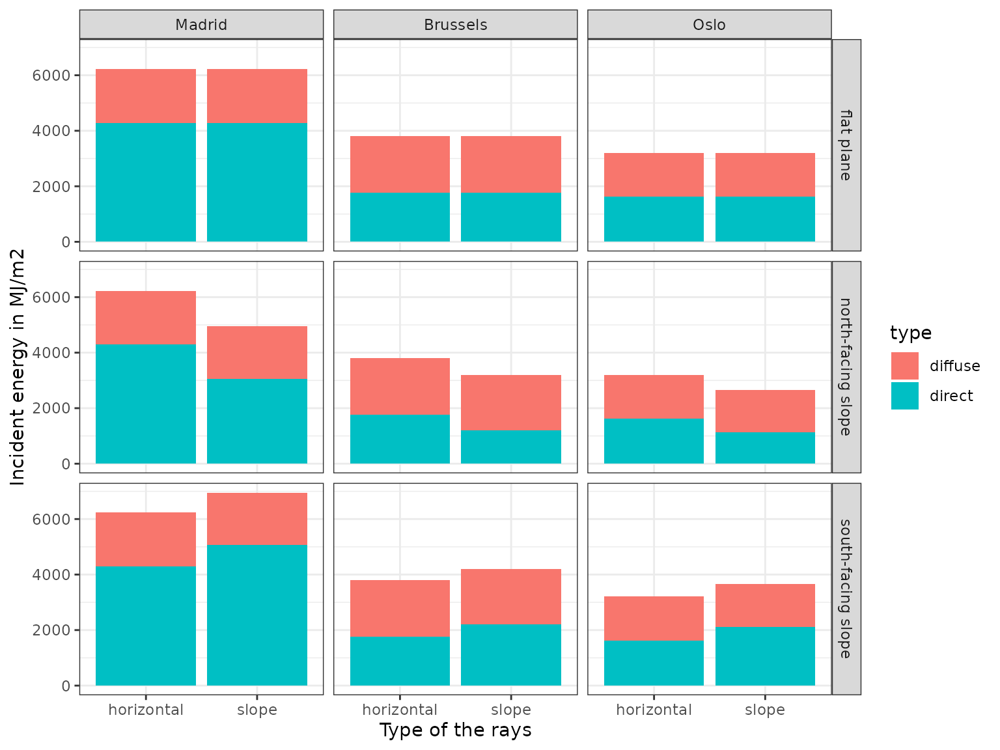
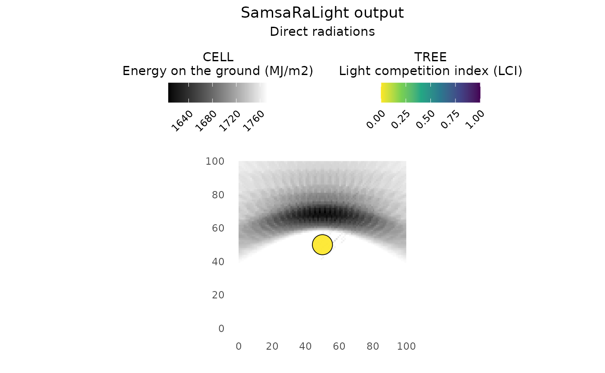
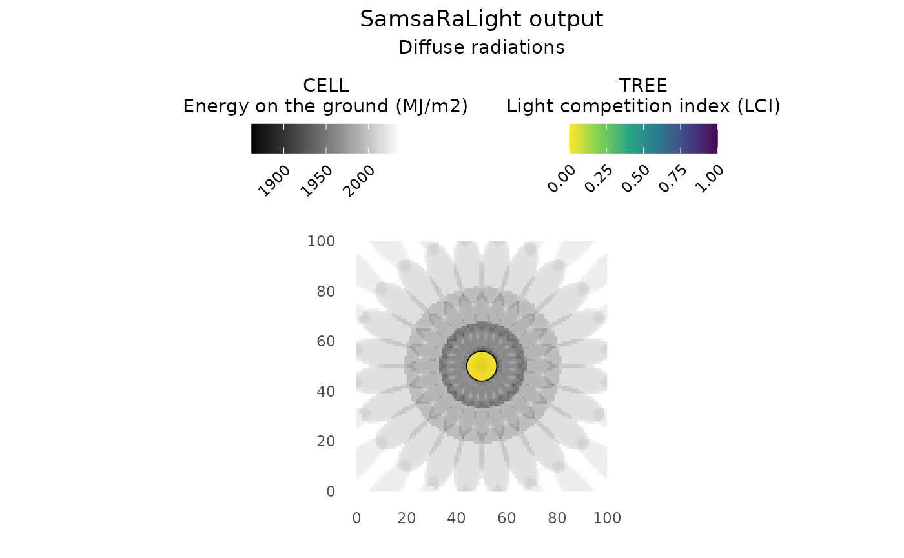
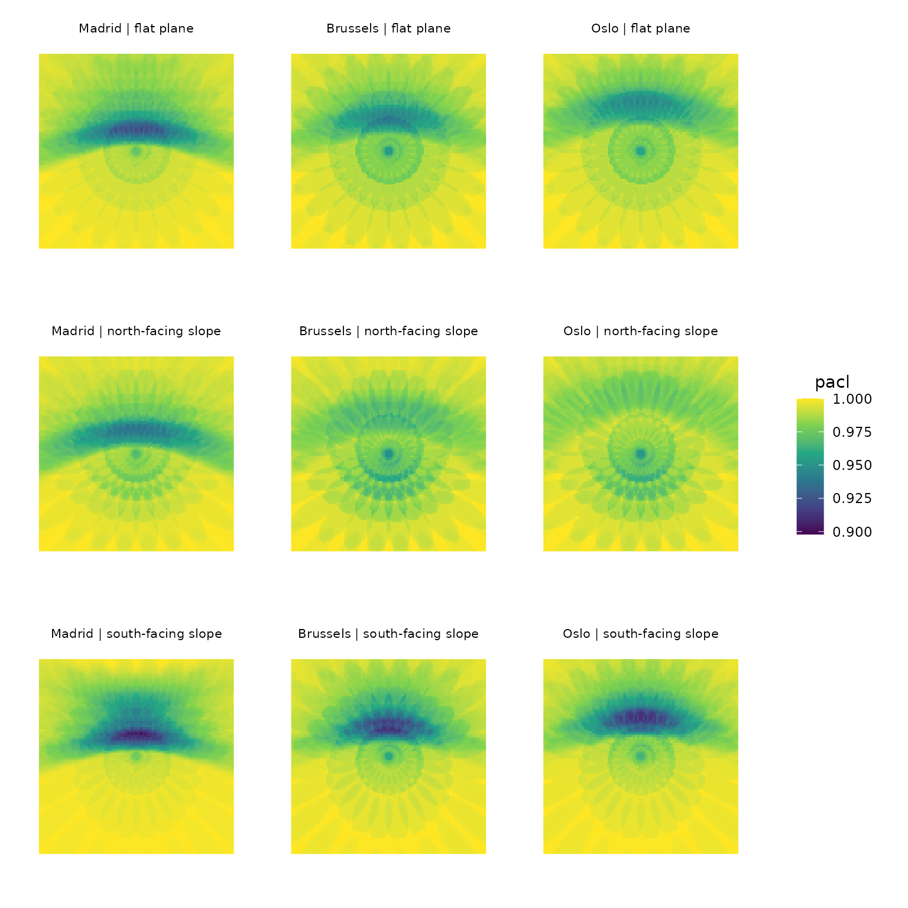

2 - Ray discretization
Understand ray discretization of direct and diffuse radiations
2-ray_tracing.RmdIn this tutorial, we will go deeper into the SamsaraLight model to better understand ray-tracing, from discretisation of direct and diffuse rays to the effect of stand geometry and latitude on light distribution on the ground. To do so, we will create from scratch a virtual stand with a single large tree at the center to observe its shading effect and how it varies between three different cities in Europe (Madrid, Brussels and Oslo) and three different stand geometry (a flat plane, a South- or a North-facing slope).
Prepare the experiment
Create the tree inventory
We can take an example dataset to observe which variable we need to create the tree inventory:
names(SamsaRaLight::data_prenovel$trees)
#> [1] "id_tree" "species" "x" "y"
#> [5] "dbh_cm" "crown_type" "h_m" "hbase_m"
#> [9] "hmax_m" "rn_m" "re_m" "rs_m"
#> [13] "rw_m" "crown_openness" "crown_lad"Initialise the stand size, say 100x100m 1ha square plot:
stand_size_x <- 100
stand_size_y <- 100Thus, create the tree inventory with one single large tree at the center of the plot:
trees_inv <- data.frame(
id_tree = 1,
species = "not specified",
x = stand_size_x / 2,
y = stand_size_y / 2,
dbh_cm = 100,
crown_type = "E", # Symmetric ellipsoidal crown
h_m = 40,
hbase_m = 20,
rn_m = 6,
re_m = 6,
rs_m = 6,
rw_m = 6,
crown_lad = 0.5 # Base LAD value, see Tutorial 3 and Tutorial 6 for deeper explanations
)
trees_inv
#> id_tree species x y dbh_cm crown_type h_m hbase_m rn_m re_m rs_m rw_m
#> 1 1 not specified 50 50 100 E 40 20 6 6 6 6
#> crown_lad
#> 1 0.5Define the experimental design
Here, we define the experimental design, that is the latitude/slope/aspect combinations we want to test. We will study 9 modalities as a combination of 3 latitudes representative of three cities in Europe (Madrid, Brussels and Oslo) and 3 stand geometry with different slope and aspect (a flat plane, a 20° north-facing slope and a 20° south-facing slope).
exp_design <- expand.grid(
city = c("Madrid", "Brussels", "Oslo"), # Define three towns with different latitudes in Europe
slope = c(0, 20),
aspect = c(0, 180)
) %>%
# Set the longitude/latitude of our three towns
dplyr::mutate(
latitude = case_match(city,
"Madrid" ~ 40.4167,
"Brussels" ~ 50.8477,
"Oslo" ~ 59.9122),
longitude = case_match(city,
"Madrid" ~ -3.7033,
"Brussels" ~ 4.3572,
"Oslo" ~ 10.7313)
) %>%
dplyr::filter(!(slope == 0 & aspect != 0)) %>% # Because aspect do not change anything in a flat plane
dplyr::mutate(stand_geom = case_when(
slope == 0 ~ "flat plane",
slope > 0 & aspect == 0 ~ "north-facing slope",
slope > 0 & aspect == 180 ~ "south-facing slope"),
id_simu = as.character(row_number())) %>%
dplyr::relocate(id_simu)
exp_design
#> id_simu city slope aspect latitude longitude stand_geom
#> 1 1 Madrid 0 0 40.4167 -3.7033 flat plane
#> 2 2 Brussels 0 0 50.8477 4.3572 flat plane
#> 3 3 Oslo 0 0 59.9122 10.7313 flat plane
#> 4 4 Madrid 20 0 40.4167 -3.7033 north-facing slope
#> 5 5 Brussels 20 0 50.8477 4.3572 north-facing slope
#> 6 6 Oslo 20 0 59.9122 10.7313 north-facing slope
#> 7 7 Madrid 20 180 40.4167 -3.7033 south-facing slope
#> 8 8 Brussels 20 180 50.8477 4.3572 south-facing slope
#> 9 9 Oslo 20 180 59.9122 10.7313 south-facing slopeCreate monthly radiations tables
For each unique city (Madrid, Brussels and Oslo), create the monthly radiation tables containing for each of the 12 months information about global energy quantity () and the ratio of this energy between diffuse and direct energies (DGratio), in MJ/m2. It is important to note that the monthly values here correspond to radiations received on a horizontal plane and are subsequently corrected by the model to estimate incident radiation on sloped surfaces.
# Get each unique city coordinate
coords <- exp_design %>%
dplyr::distinct(city, longitude, latitude)
# Create the list of radiation tables
data_rad_list <- vector("list", length = nrow(coords))
names(data_rad_list) <- coords$city
# Fetch
for (i in seq_along(coords)) {
data_rad_list[[coords$city[i]]] <- SamsaRaLight::get_monthly_radiations(
latitude = coords$latitude[i],
longitude = coords$longitude[i]
)
check_monthly_radiations(data_rad_list[[coords$city[i]]])
}
#> Radiation table successfully validated.
#> Radiation table successfully validated.
#> Radiation table successfully validated.
# Create the plot with monthly global energies
plt_hrad <- data_rad_list %>%
dplyr::bind_rows(.id = "city") %>%
ggplot(aes(y = Hrad, x = month, color = city)) +
geom_point() +
geom_line() +
labs(subtitle = "Global energy") +
theme_bw() +
theme(legend.position = "bottom",
plot.subtitle = element_text(hjust = 0.5))
# Create the plot with monthly ratio between diffuse and direct rays
plt_dgratio <- data_rad_list %>%
dplyr::bind_rows(.id = "city") %>%
ggplot(aes(y = DGratio, x = month, color = city)) +
geom_point() +
geom_line() +
labs(subtitle = "Ratio diffuse/global") +
theme_bw() +
theme(legend.position = "none",
plot.subtitle = element_text(hjust = 0.5))
# Get legend containing cities
legend_radiation <- cowplot::get_legend(plt_hrad)
plt_hrad <- plt_hrad + theme(legend.position = "none")
# Combines the plots
cowplot::plot_grid(
legend_radiation,
cowplot::plot_grid(plt_hrad, plt_dgratio, nrow = 1),
ncol = 1, rel_heights = c(1, 10)
)
Across all cities, monthly global radiation peaks during spring and summer due to longer daylight and higher solar elevation angles, which reduce atmospheric scattering and favor direct radiation. In contrast, winter months combine shorter days, lower sun angles, and increased atmospheric path length, leading to lower global energy and a higher diffuse fraction.
Madrid exhibits higher global radiation and a lower diffuse-to-global ratio due to its lower latitude, which results in higher solar elevations, shorter atmospheric path lengths, and therefore a dominance of direct radiation throughout the year. However, the effect of latitude tends to plateau: Brussels (50°N) and Oslo (60°N) exhibit similar monthly radiation totals and diffuse/direct ratios. This results from a compensation between lower solar elevation and longer day length: at high latitudes, summer radiation is characterized by long-lasting low-angle direct sunlight, which can dominate over diffuse radiation when integrated over the month.
Although the total amount and partitioning of radiation are comparable between Brussels and Oslo, the geometric distribution of direct rays differs markedly as we will explore later in this tutorial, which has strong implications for 3D light interception and shading patterns.
Create the SamsaRaLight input stands
First, we have to define our tree inventory zone by defining a table with each vertex of our polygon. In our case, it a square of 100x100m, thus 4 vertices with combination of 0 and 100 as coordinates. Be careful, we have to define the vertices in the correct order to have a mathematically correct polygon, otherwise, the function will first try to correct your polygon, and if it fails, it will send an error.
core_polygon_df <- data.frame(
x = c(0, 100, 100, 0),
y = c(0, 0, 100, 100)
)
core_polygon_df
#> x y
#> 1 0 0
#> 2 100 0
#> 3 100 100
#> 4 0 100Then, we create the SamsaRaLight input stand from the created tree inventory, for each of the different stand geometry and latitude in our experimental design. We set the cell size as 1x1m in order to observe with great precision the shading effect of the tree within the stand.
sl_stand_list <- vector("list", length = nrow(exp_design))
for (i in 1:nrow(exp_design)) {
mod_design <- exp_design[i,]
# Create the stand with given stand geometry, tree inventory and latitude
sl_stand_list[[i]] <- SamsaRaLight::create_sl_stand(
trees_inv = trees_inv,
cell_size = 1,
latitude = mod_design$latitude,
slope = mod_design$slope,
aspect = mod_design$aspect,
north2x = 90, # i.e. Y-axis oriented to real North
core_polygon_df = core_polygon_df
)
}
#> Polygon successfully validated.
#> SamsaRaLight stand successfully created.
#> Polygon successfully validated.
#> SamsaRaLight stand successfully created.
#> Polygon successfully validated.
#> SamsaRaLight stand successfully created.
#> Polygon successfully validated.
#> SamsaRaLight stand successfully created.
#> Polygon successfully validated.
#> SamsaRaLight stand successfully created.
#> Polygon successfully validated.
#> SamsaRaLight stand successfully created.
#> Polygon successfully validated.
#> SamsaRaLight stand successfully created.
#> Polygon successfully validated.
#> SamsaRaLight stand successfully created.
#> Polygon successfully validated.
#> SamsaRaLight stand successfully created.Run SamsaRaLight
We can now easily run the SamsaraLight ray-tracing model on our 9 virtual stands. Here, we decided to not use the torus as we want to observe the shading effect of only the single tree in the middle of the plot, thus considering the virtual 100x100m is surrounded by grasslands.
# Store SamsaraLight outputs in a list
out_sl_list <- vector("list", length = nrow(exp_design))
for (i in 1:nrow(exp_design)) {
mod_design <- exp_design[i,]
# Run SamsaraLight
out_sl_list[[i]] <- SamsaRaLight::run_sl(
# Simulation inputs
sl_stand = sl_stand_list[[i]],
monthly_radiations = data_rad_list[[mod_design$city]],
# Define stand boundaries
use_torus = FALSE,
# Set detailed output to have information about ray-discretization and direct/diffuse outputs
detailed_output = TRUE,
# Activate parallel mode
parallel_mode = TRUE,
verbose = FALSE
)
}
#> Warning in sl_set_openmp(parallel_mode, as.integer(n_threads)): OpenMP not
#> available: running sequentially.
#> Warning in sl_set_openmp(parallel_mode, as.integer(n_threads)): OpenMP not
#> available: running sequentially.
#> Warning in sl_set_openmp(parallel_mode, as.integer(n_threads)): OpenMP not
#> available: running sequentially.
#> Warning in sl_set_openmp(parallel_mode, as.integer(n_threads)): OpenMP not
#> available: running sequentially.
#> Warning in sl_set_openmp(parallel_mode, as.integer(n_threads)): OpenMP not
#> available: running sequentially.
#> Warning in sl_set_openmp(parallel_mode, as.integer(n_threads)): OpenMP not
#> available: running sequentially.
#> Warning in sl_set_openmp(parallel_mode, as.integer(n_threads)): OpenMP not
#> available: running sequentially.
#> Warning in sl_set_openmp(parallel_mode, as.integer(n_threads)): OpenMP not
#> available: running sequentially.
#> Warning in sl_set_openmp(parallel_mode, as.integer(n_threads)): OpenMP not
#> available: running sequentially.Understand the detailed output
The change in incident energy with stand latitude and stand geometry
The annual incident energy of diffuse and direct rays (in MJ/m2),
integrated over the year, is provided for both a horizontal surface and
the slope in output$monthly_rays$energies, returned by the
run_sl() function. These values represent the annual
radiation above the canopy and can be interpreted as the energy reaching
the forest floor in the absence of trees, either on a horizontal plane
or on the slope. In the ray-tracing model, incident energy on the slope
is used to compute tree light interception and energy received by ground
cells, whereas energy on a horizontal plane is used for radiation
reaching virtual sensors (see Tutorial 3: Understanding transmission
models with virtual sensors).
# Create a dataframe for comparing incident energies
out_sl_list %>%
purrr::map(~as.data.frame(as.list(.x$output$monthly_rays$energies))) %>%
dplyr::bind_rows(.id = "id_simu") %>%
dplyr::mutate(horizontal_total = horizontal_direct + horizontal_diffuse,
slope_total = slope_direct + slope_diffuse) %>%
tidyr::pivot_longer(!id_simu,
names_pattern = "(.*)_(.*)",
names_to = c("surface", "type"),
values_to = "energy") %>%
dplyr::left_join(exp_design, by = "id_simu") %>%
dplyr::filter(type != "total") %>%
# Plot the graphic
ggplot(aes(y = energy, x = surface, fill = type)) +
geom_col() +
facet_grid(cols = vars(city), rows = vars(stand_geom)) +
theme_bw() +
ylab("Incident energy in MJ/m2") +
xlab("Type of the rays")
For each location, the received energy on a slope equals that on a horizontal surface when the slope is flat, whereas a south-facing slope receives more energy and a north-facing slope receives less. In the Northern Hemisphere, the Sun follows a daily trajectory predominantly oriented toward the south, so tilting a surface toward the south increases its alignment with incoming direct radiation, while tilting it toward the north reduces exposure.
As discussed above, differences between locations are also evident, with Madrid receiving much greater incident energy than Brussels and Oslo, mainly due to a higher contribution of direct radiation. Brussels in turn shows slightly higher incident energy than Oslo, particularly for diffuse radiation, as confirmed by the monthly incident energy ratio from previous graphs.
Understand the discretisation of direct and diffuse rays
The discretisation of the rays are given in the
output$monthly_rays$rays of the run_sl()
function output. Direct rays (direct = TRUE) follow the
Sun’s annual trajectory as determined by latitude, while diffuse rays
(direct = FALSE) are discretized over the entire sky
hemisphere. Ray directions are defined by azimut and elevation
(azimut and height_angle, in radians), and
their incident energies (e_incident in MJ/m2) are derived
from monthly global radiation and diffuse-to-global ratios and
distributed according to ray geometry. Parameters relative to the
discretisation of diffuse and direct rays can be seen and tweaked from
the arguments of the advanced SamsaRaLight function :
sl_run_advanced().
out_sl_list %>%
purrr::map(~as.data.frame(as.list(.x$output$monthly_rays$rays))) %>%
dplyr::bind_rows(.id = "id_simu") %>%
dplyr::left_join(exp_design, by = "id_simu") %>%
ggplot(aes(x = azimut, y = height_angle,
color = e_incident, shape = direct)) +
geom_point() +
facet_grid(cols = vars(city), rows = vars(stand_geom)) +
scale_color_viridis_c() +
theme_bw()
In the graph above, two distinct azimuth–elevation patterns can be observed. Direct rays form a paraboloid-shaped distribution, representing the Sun’s annual trajectory, whereas diffuse rays form a regular grid of points corresponding to their discretization over the entire sky hemisphere. The maximum elevation angle of direct rays increases with decreasing latitude, reflecting a higher solar path over the year and consistently higher individual ray energies for both direct and diffuse components. Sloped surfaces allow low-elevation, near-horizontal rays to reach the ground; however, for north-facing slopes this results in a strong truncation toward higher azimuth angles, primarily affecting many direct rays, while south-facing slopes exhibit a weaker truncation toward lower azimuth angles, mainly affecting a smaller fraction of diffuse rays.
Consequences in tree light interception
If the user set detailed_output = TRUE in the
run_sl()function, the tree light output table
output$light$trees also contains light interception
variables for both direct and diffuse radiations. In the case of
absolute energy variables (e and epot), the
total energy is the sum of both direct and diffuse intercepted energies.
We can observe how the annual energy intercepted by the tree varies with
stand geometry and latitude, for both direct and diffuse rays.
# Create a dataframe for comparing intercepted energies
out_sl_list %>%
purrr::map(~as.data.frame(as.list(.x$output$light$trees))) %>%
dplyr::bind_rows(.id = "id_simu") %>%
dplyr::select(id_simu, id_tree, e_total = e, e_direct, e_diffuse) %>%
tidyr::pivot_longer(!c(id_simu, id_tree),
names_prefix = "e_",
names_to = "type",
values_to = "energy_intercepted") %>%
dplyr::left_join(exp_design, by = "id_simu") %>%
dplyr::filter(type != "total") %>%
# Plot the graphic
ggplot(aes(y = energy_intercepted, x = city, fill = type)) +
geom_col() +
facet_wrap(~stand_geom) +
theme_bw() +
ylab("Annual light intercepted energy in MJ") +
xlab("Type of the rays")
As a direct consequence of ray discretization, which determines both ray geometry and energy, the single tree intercepted more annual energy on a south-facing slope than on a horizontal surface, and more than on a north-facing slope. These differences arise primarily from the direct radiations, as slope and aspect strongly influence the number and orientation of direct beams reaching the canopy and the ground. In addition, the single tree intercepted more energy in Madrid than in Brussels and Oslo, which was amplified on south-facing slopes due to the greater contribution of direct radiation at lower latitudes combined with slope and aspect effects acting mainly on direct rays.
Consequences on light distribution within the stand
If the user set detailed_output = TRUE in the
run_sl()function, the cell light output table
output$light$cells also contains light variables for both
direct and diffuse radiations. The user can plot() the
output light on the ground from total radiation (default behavior,
argument energy_direct = NULL), but also only from direct
energy (direct_energy = TRUE) or from diffuse radiations
(direct_energy = FALSE).
Patterns of direct and diffuse radiations
Here we observe the shading effect of the single tree for both direct and diffuse radiations within an example plot (Brussels, flat plane) to show the different patterns between direct/diffuse components. We plot here the absolute amount of energy on the ground in MJ/m2 for each of the 10.000 1x1m cell after attenuation by the tree located in the middle of the plot. Be careful, the color for both direct and diffuse are not on the same scale. Also, note that in the output of this experiment, the tree light competition index LCI is equal to 0 (i.e. no light competition) as the tree is alone in the stand: the total energy intercepted is equal to the potential energy intercepted .
Direct radiations
plot(out_sl_list[[2]], what_cells = "absolute",
show_trees = TRUE, direct_energy = TRUE)
For the direct ray shading effect, we observe a paraboloidal-shaped
pattern oriented toward the North (i.e., with the north2x
variable set to 90° when creating the virtual stand, so that the Y-axis
points to true North). This pattern reflects the annual trajectory of
the Sun. Direct rays primarily strike the tree crown from the South,
casting shadows on the ground to the North of the tree. As we move
further toward the North, East, or West, the shading effect of the tree
decreases, with the strongest gradient along the Y-axis toward the
North, because the Sun moves daily from East to West thus slightly
compensating the tree shading effect over the course of the day.
Diffuse radiations
plot(out_sl_list[[2]], what_cells = "absolute",
show_trees = TRUE, direct_energy = FALSE)
For the diffuse rays, we observe a symmetric pattern around the tree—quite a pretty flower-like shape! This symmetry reflects the discretization of diffuse rays over the entire sky hemisphere. The slightly non-continuous appearance of the pattern results from the coarser discretization used for diffuse rays compared to direct rays. This reduced precision is intentional, as increasing the number of diffuse rays would quadratically increase computation time without significantly improving accuracy.
Combined effect on the total relative energy on the ground
Comparing absolute ground energy values using a common color scale across all modalities results in nearly uniform plots, because variations in energy are much larger between latitudes and surface geometries than within a single cell due to shading by an individual tree. To highlight intra-cell variability, we therefore use the PACL (relative) scale, which removes the dominant effects of stand geometry and site location on ground energy. As a result, PACL provides a more relevant proxy for assessing regeneration dynamics and visualizing shade patterns, as it primarily reflects the shading effects of trees within the stand rather than large-scale site effects.
# Get minimum PACL value
pacl_range <- out_sl_list %>%
purrr::map(~.x$output$light$cells$pacl) %>%
unlist() %>%
range()
# Store plots in a list
plt_ground_list <- vector("list", nrow(exp_design))
legend <- NULL
for (i in 1:nrow(exp_design)) {
mod_design <- exp_design[i,]
# Plot the stand with light outputs
tmp_sl_plot <- plot(out_sl_list[[i]],
what_cells = "relative",
show_trees = FALSE)
# Change some ggplot2 features
tmp_sl_plot <- tmp_sl_plot +
labs(title = NULL,
subtitle = paste(mod_design$city, "|", mod_design$stand_geom)) +
theme(legend.position = "top",
axis.text = element_blank(),
plot.subtitle = element_text(size = 8, hjust = 0.5)) +
scale_fill_viridis_c(limits = pacl_range)
# Fetch the legend if it is not already done
# And remove the plot legend after that
if (is.null(legend)) {
tmp_sl_plot <- tmp_sl_plot + theme(legend.position = "right")
legend <- cowplot::get_legend(tmp_sl_plot)
}
tmp_sl_plot <- tmp_sl_plot + theme(legend.position = "none")
# Add the plot to the list
plt_ground_list[[i]] <- tmp_sl_plot
}
# Gather all the plots using the cowplot package
cowplot::plot_grid(
cowplot::plot_grid(plotlist = plt_ground_list,
nrow = 3, ncol = 3),
legend,
nrow = 1, rel_widths = c(5, 1)
)
The graph above combines the patterns observed from the ray discretization, taking into account both stand geometry and latitude. South-facing slopes show a stronger attenuation of direct rays (reflected by lower PACL values in the paraboloidal-shaped pattern) at the expense of diffuse rays, which exhibit higher PACL values in the flower-like pattern. Latitude primarily affects the shading pattern of direct rays: at lower latitudes, such as Madrid, shade is more concentrated near the tree, whereas at higher latitudes, shading from direct rays is more extended and PACL from diffuse rays is generally lower, particularly on north-facing slopes.